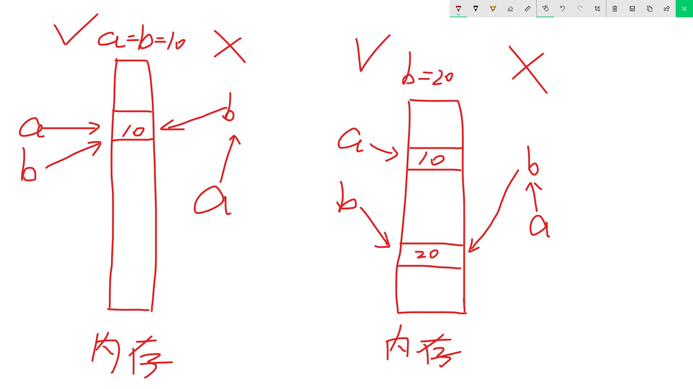

#5 Python变量与输入输出
学习一门编程语言，最基本的无非不过学习其变量规则、条件语句、循环语句和函数，接下来的几节将开始记录这些基本的语法，本节主要记录变量规则！
一、Python输入输出
在说Python变量之前，先补充一下Python的输入和输出语句，在Python的编写过程中，会遇到许多的错误，基本的调试方法就是将中间变量打印（输出）出来，所以说Python的输入输出语句十分重要，尤其是输出语句，一定要灵活掌握。
1. 输出
前文可能已经接触到了输出语句 print，实际上在Python3中它是一个内置函数（关于函数的概念之后会讲），在Python常被成为打印，具体用法如下：
1>. 查看帮助信息
在IPyone中输入help(print)，得到其帮助信息，如果你想要查看其他内置函数的帮助信息，也是用这种方法哦
1 | In [1]: help(print) |
可以看到print函数的参数有value、sep、end、file、flush
其中sep、end、file、flush都已经被赋值了，也就是说，这几个参数都有默认值了，需不需要改要看自己的需求，而value没有被赋予默认值，也就是说，你必须要给value赋值才行，如果你还是不明白，来看例子：
2>. value
由于value参数位于print函数的第一位置，所有给其赋值有两种方式：
print(value='hi')或者print('hi'),当然大家全部倾向于后者可以传入多个参数，中间用逗号隔开：
1
2In [2]: print('hello','hi','i am the best man in the world!')
hello hi i am the best man in the world!可以是计算式，打印其结果：
1
2In [3]: print(1+4)
5学了上面两种方法后，组合起来调皮一下下：
1
2In [5]: print('你','是',200+50)
你 是 250
3>. sep
sep是分隔符，默认是空格，让我们来玩弄一下它： 1
2
3# 默认
In [7]: print(5,2,0)
5 2 0
1 | # 修改为- |
1 | # 修改为无任何连接符 |
实际使用中，很少回去修改sep的值，通常默认就可以
4>. end
end是结束符，默认是 '' （其实就是回车换行），盘它：
1 | # 默认 |
1 | # 更改结束符 |
1 | # 将多条语句打印在一行 |
在实际使用中，有需要的话会更改end参数的值
5>. file
file是输出流，默认输出到屏幕上，可以通过修改其值打印到其他地点，比如文件：
打开VSCode，在跟着MS学Python文件夹中新建#5文件夹，新建test.py文件练习
1 | # 默认 |
1 | # 输出到test.txt文件 |
之后会在目录里看到test.txt文件，里面的内容为5 2 0
6>. flush
flush是强制刷新到输出流，默认为否。弄清楚这个要知道计算机存储工作的原理，为了加快计算机的存储速度，实际上数据并不会直接写入硬盘，而是留在中转站内存中，当内存中的数据量达到规定值以后，才会将内存中的数据高速写入硬盘。如果内存中的数据没有达到规定值计算机突然断电，这部分数据就消失了，所有print函数有这么一个参数，改为是以后，一但有数据就立刻写入硬盘中，不会因为断电或者其他情况而导致数据丢失=====(￣▽￣*)b
2. 输入
说完了输出，就该输入函数 input 了，输入相对输出就很easy了：
1>. 查看帮助信息
1 | In [15]: help(input) |
可以看到，input超级简单有木有，话不多说，盘它！
在Python3中，输入的一切都是字符串（这是Python的一种数据类型，以后会说到，总之现在先了解一下），上代码：
2>. 不带参数的输入：
1 | In [18]: input() |
3>. 带参数的输入：
1 | In [19]: input('请输入：') |
看到这里你应该明白了哇，再补充一点： 1
2
3In [20]: input('>>')
>>520
Out[20]: '520'
这里需要格外注意的是，输出的520是被单引号引起来的，这就是字符串，而不是数字了
二、Python变量
看到变量，这可能是所有萌新最头疼的地点，因为很难理解的概念，其实变量在小学就遇到了，让我来勾起你的记忆
小学题目：现有一个长方体，长10厘米，宽5厘米，请问这个长方体面积是多少？ （答对不得分，答错扣41分）
高中题目：现有一个长方体，长a=10cm，宽b=5cm，计算其面积s。 （答对不得分，答错扣41分）
大学题目：现有 一个长方体，长为a，宽为b，请计算其面积s。 （答对不得分，答错扣41分）
我的题目：请以一个程序员的角度从以上三个题目中找出全部的变量！
1>. 什么是变量
维基百科这么说：在程序设计中，变量（英语：Variable，scalar）是指一个包含部分已知或未知数值或信息（即一个值）之存储地址，以及相对应之符号名称（识别字）。通常使用变量名称引用存储值；将名称和内容分开能让被使用的名称独立于所表示的精确消息之外。计算机源代码中的识别字能在运行期间绑扎一个值，且该变量的值可能在程序运行期间改变。 程序设计中的变量不一定能直接对应到数学中所谓的变量之概念。在程序设计中，变量的值不一定要为方程或数学公式之一部分。程序设计中的变量可使用在一段可重复的程序：在一处赋值，然后使用于另一处，接着在一次赋值，且以相同方式再使用一次（见迭代）。程序设计中的变量通常会给定一个较长的名称，以描述其用途；数学中的变量通常较为简洁，只给定一、两个字母，以方便抄写及操作。
我这么说：变量就是房子的门牌号
2>. 变量的申明
1 | a = 10 |
这就就申明了一个变量，变量为 a，变量的值为10
3>. 变量的修改
1 | In [21]: a = 10 |
变量的修改直接用新值覆盖掉以前的就可以
4>. 变量的命名规则
变量只能是字母、数字或下划线的任意组合
变量的第一个字符不能是数字
关键字不能申明为变量，Python关键字有：and, as, assert, break, class, continue, def, del, elif, else, except, exec, finally, for, fom, global, if, import, in, is, lambda, not, or, pass, print, raise, return, try, while, with, yield（这些关键字之后 都会学到，而且要熟练掌握哦，喔哈哈哈哈哈）
5>. 变量的深入探索
来看三段代码 1
2
3
4
5
6
7
8
9
10
11
12# No.1
In [25]: a=10
In [26]: b=10
In [27]: a,b
Out[27]: (10, 10)
In [28]: a=20
In [29]: a,b
Out[29]: (20, 10)
1 | # No.2 |
1 | # No.3 |
从上面的三段代码可以看出，变量指向的永远是值，而不会指向变量，a=b=10的真实含义是a指向10，b指向10，这里的两个10是同一个10，后来b=20意思是b变心了，b现在指向了另外一个值20，但是a指向的依旧是10，这里一定要注意，a指向的是10，而不是指向变量b，理解不了那就上图：

这次懂了哇，弟弟们ㄟ( ▔, ▔ )ㄏ
6>. 变量的交换
如果你有其他语言的基础，那么对于交换变量这一块一定很熟悉，你会毫不犹豫的说找一个中间变量 t 不就行了，的确，Python也可以这样： 1
2
3
4
5
6
7
8
9
10
11
12
13
14
15In [55]: a=10
In [56]: b=20
In [57]: a,b
Out[57]: (10, 20)
In [58]: t=a
In [59]: a=b
In [60]: b=t
In [61]: a,b
Out[61]: (20, 10)
但但但但但是，如果Python也用这种方法的话，我这里肯定就不会提及了，来看一名专业的Pythonic是如何交换变量的：
1 | In [66]: a=10 |
不要惊讶（看你一副 没见过世面的样子，下面还有更精彩的），Python就是这么🐮，这该死的无处安放的魅力啊~
7>. Python3变量的特殊之处
如果让我说，Python3变量最特殊的地点在哪，那一定是Python3中可以用中文命名变量了： 1
2
3
4In [71]: 长=10
In [72]: 长
Out[72]: 10
看到没，用中文命名变量，颠覆你的编程观，哈哈，不过这一点了解就好，实际使用这种方法万万不可
8>. 变量的约定俗成
一定要让变量要有意义，变量要让自己和其他人理解，变量的命名其实最重要的一点在这里，变量不要用中文去命名，符合国际范好吗？还有就是长就是长，宽就是宽，高就是高，不要用a啊，b啊，c啊，要用length，宽要用width，高要用high，其他的变量也一样，如果实在不清楚英文单词的，用汉语拼音去命名，而且关键变量要有注释！！！
看到这里，之前的题目心里有了答案了哇。
三、注释
这里小编想说想要成为一名专业的程序员，你的代码一定要结构清晰，并且关键地方要有注释的存在，一方面自己可以更加快速的找到变量，另一方面代码交接的时候，对方也有理解你编的代码。注释的语句不会被执行，Python的注释方法如下：
单行注释：#注释内容 1
#我是注释，你好~
多行注释：'''注释内容''' 1
2
3
4
5'''
我是多行注释
你好
朋友
'''
在日常的写代码中，单行注释和多行注释经常要用到，别小看这看似没有用的注释，实则是你成长的必经之路！